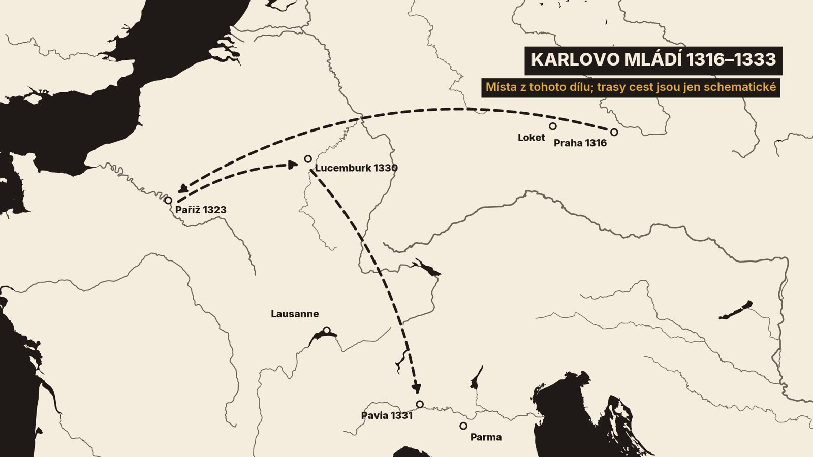
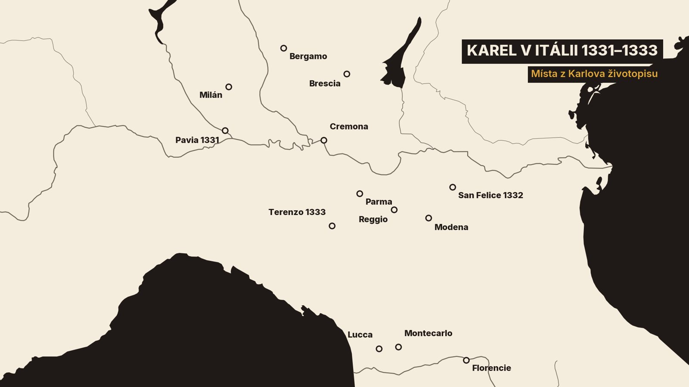

0. Kdo píše a komu
Na Velikonoce, tedy třetí den po mém příjezdu, otrávili moje služebnictvo. Já jsem díky Boží milosti unikl.
Když jsem šel k obědu, řekli mi, že moje služebnictvo náhle onemocnělo, a hlavně ti, kdo jedli před obědem. Seděl jsem u stolu a jíst jsem nechtěl. Všichni jsme byli vyděšení.
Komentář: Takhle vzpomíná na Velikonoce roku 1331 v italské Pavii budoucí císař Karel Čtvrtý. Bylo mu tehdy čtrnáct let.[1][2]
1. Kdo píše a komu
Komentář: Ta slova napsal sám Karel, český král a římský císař, před bezmála sedmi sty lety. Je to jeho vlastní životopis, dnes se mu říká Vita Caroli, tedy Karlův život. Podle německé biografie byl Karel prvním německým králem, který o sobě napsal životopis.[1][2]
Komentář: Karel nepsal kroniku. Knihu věnoval těm, kdo po něm usednou na jeho dva trůny, český a římský. Chtěl jim dát poučení a příklad, a proto v ní najdeme i sny, vidění a zázraky.[1]
Komentář: Podle editora Josefa Emlera psal hlavně zpaměti, mnoho let po událostech. Kdy přesně, nevíme. Německá biografie uvádí rok 1346, starší badatelé mysleli spíš na padesátá nebo šedesátá léta čtrnáctého století.[1][2]
Komentář: Sám Karel knihu dovedl jen do začátku roku 1341. Zbytek dopsal někdo jiný, k tomu se dostaneme ve třetím dílu.[1]
Komentář: Karel psal latinsky. Český překlad podle editora vznikl nejspíš ještě za jeho života. Obrazy, které uvidíte, pocházejí ze dvou opisů tohoto překladu z druhé poloviny patnáctého století. Oba dnes leží v Rakouské národní knihovně ve Vídni.[1][8][9]
Komentář: To, co uslyšíte, je náš vlastní překlad do dnešní češtiny. Překládali jsme z Karlovy latiny a se starým českým překladem jsme ho porovnávali. Nic jsme nevynechali a nic nepřidali. Kde je potřeba něco vysvětlit, ozve se komentář, jako teď.
Komentář: Karel svůj životopis otevírá dvěma kapitolami rad a kázání pro své nástupce. Ty si přečteme v posledním dílu. Dnes začneme tam, kde začíná jeho příběh: u jeho rodu a u cesty do Francie, kam ho otec poslal jako malého chlapce.[1]

Komentář: A teď už má slovo Karel.
2. Rod a dětství v Paříži
Vám, svým nástupcům, jsem pečlivě sepsal předchozí slova o moudrosti a bázni Boží, nakolik byla má nepatrnost schopna přijmout Boží pomoc. Teď vám chci napsat o svém marném a pošetilém životě a o počátku své pozemské pouti, aby vám to bylo příkladem.
Nebudu ale mlčet ani o milosti, kterou mi Bůh vlil, a o lásce k učení, kterou si mé srdce vytrvale uchovávalo. Čím víc vám o tom budou vyprávět vaši otcové a předkové, tím víc můžete doufat, že vám Boží pomoc přispěchá v námahách. Vždyť je psáno: „Naši otcové nám vyprávěli.“
Nechci tedy, abyste nevěděli toto. Jindřich VII., římský císař, zplodil s Markétou, dcerou brabantského vévody, mého otce jménem Jan.
Můj otec se oženil s Eliškou, dcerou českého krále Václava II., a s ní získal České království, protože v královském rodu Čechů vymřeli muži.
Vyhnal Jindřicha, vévodu korutanského. Ten měl za manželku starší sestru otcovy manželky a kvůli ní držel České království před ním. Ta sestra později zemřela bez potomků. Jasněji se o tom píše v českých kronikách.
Komentář: Karel tu mluví o roce 1310. Poslední Přemyslovec, mladý král Václav Třetí, byl zavražděn a v Čechách hledali nového krále. Našli ho v Janu Lucemburském, synovi císaře Jindřicha Sedmého. Korunu mu nabídli spolu s rukou Elišky, sestry zavražděného krále.[2][3][4]
Týž Jan, český král, zplodil s královnou Eliškou svého prvorozeného syna jménem Václav. Bylo to léta Páně 1316, čtrnáctého května, v první hodinu, v Praze.
Komentář: Ano, budoucí Karel Čtvrtý se narodil jako Václav, stejně jako se jmenoval jeho děd z matčiny strany, král Václav Druhý. Jméno Karel dostane až ve Francii, jak hned uslyšíme.[1][2]
Komentář: O dalších letech v Čechách Karel mlčí. Nezmíní spory rodičů ani to, že ho otec jako tříleté dítě odloučil od matky na hradě Loket. Podle pozdějšího kronikáře Beneše z Weitmile ho tam dva měsíce drželi ve sklepě, kam světlo pronikalo jen otvorem.[1][3]
Potom zplodil druhého syna jménem Otakar, který zemřel jako malé dítě. A nakonec zplodil i třetího, jménem Jan.
Zmíněný král měl dvě sestry, které provdal. Jednu dal uherskému králi Karlovi I., a ta zemřela bez dětí. Druhou dal Karlovi, francouzskému králi.
Za jeho vlády ve Francii, léta od vtělení Páně 1323, mě můj už zmíněný otec poslal k tomu francouzskému králi. Byl jsem tehdy v sedmém roce svého dětství.
Francouzský král mě dal biřmovat biskupovi a dal mi své vlastní jméno, totiž Karel. A dal mi za manželku dceru svého strýce Karla jménem Markéta, které se říkalo Blanka.
Komentář: Nevěstě bylo asi šest nebo sedm let, zhruba jako ženichovi. Přezdívku Blanka, francouzsky Blanche, tedy Bílá, prý dostala pro světlé vlasy.[1][2][5]
Jeho manželka, sestra mého otce, zemřela téhož roku bez potomků. Král se potom oženil s jinou.
Ten král mě měl velmi rád. Nařídil mému kaplanovi, aby mě trochu naučil latině, ačkoli sám král latinsky neuměl. Tak jsem se naučil číst hodinky blahoslavené a slavné Panny Marie.
Když jsem jim trochu rozuměl, četl jsem je v dětství každý den čím dál raději. Moji vychovatelé totiž měli od krále příkaz, aby mě k tomu vedli.
Ten král nebyl lakomý na peníze a řídil se dobrými radami. Jeho dvůr zářil shromážděním starých knížat, duchovních i světských.
Pak ale vznikl velký spor mezi tehdejším anglickým králem a zmíněným francouzským králem.
Anglický král měl za manželku sestru francouzského krále. Vyhnal ji z Anglie spolu s jejich prvorozeným synem jménem Eduard. Přišla ke svému bratrovi a zůstala se svým prvorozeným ve Francii ve vyhnanství.
Francouzský král se rozhněval, že vyhnali jeho sestru a synovce. Požádal proto mého tchána Karla, svého strýce, aby pomstil takovou potupu, která jejich rod postihla.
Ten sebral vojsko, vtáhl do Akvitánie a dobyl ji skoro celou kromě Bordeaux a několika pevností nebo hradů.
Karel se s vítězstvím vrátil do Francie. Pak dal dceru své dcery, hraběnky z Henegavska, sestry mé manželky, za manželku Eduardovi, synovi anglického krále, ještě za jeho vyhnanství. Dal mu průvod a poslal ho do Anglie.
Eduard přemohl svého otce, zajal ho, zbavil ho království a sám si nasadil korunu. Téhož roku byl jeho otec ve vězení zabit.
V tom roce také zemřel Karel, můj tchán, a zanechal prvorozeného syna jménem Filip.
Téhož roku na Hromnice zemřel Karel, francouzský král. Zanechal těhotnou manželku a ta porodila dceru.
Podle zvyku toho království dcery nedědí. Proto byl za francouzského krále povýšen Filip, syn mého tchána, protože byl nejbližším dědicem po mužské linii.
Filip si ponechal rádce svého předchůdce. Jejich radami se ale vůbec neřídil a oddal se lakotě.
Mezi jeho rádci byl jeden velmi moudrý muž, Petr, opat z Fécampu, rodem z Limoges. Byl výmluvný a vzdělaný a vyznačoval se ve všem počestnými mravy.
Na Popeleční středu v prvním roce Filipovy vlády sloužil mši a kázal tak obratně, že ho všichni chválili.
Já jsem byl po smrti zmíněného Karla, u něhož jsem pobyl pět let, na dvoře krále Filipa, jehož sestru jsem měl za manželku.
V tom kázání se mi opatova výmluvnost tak zalíbila, že jsem ho s takovou zbožností poslouchal a hleděl na něj, až jsem začal sám v sobě přemýšlet: „Čím to je, že se do mě skrze toho člověka vlévá taková milost?“
Pak jsem se s ním seznámil. Zahrnoval mě velkou láskou jako otec a často mě poučoval o Písmu svatém.
Komentář: Ten opat se jmenoval Pierre Roger. V roce 1342 se stal papežem Klementem Šestým a jako papež pak pomohl svému bývalému žákovi k volbě římským králem.[1][2]
Po Karlově smrti jsem byl na dvoře krále Filipa ještě dva roky. Po těch dvou letech mě týž král poslal i s mou manželkou, svou sestrou jménem Blanka, k mému otci Janovi, českému králi, do města Lucemburku.
Lucembursko bylo hrabstvím mého otce, které zdědil po svém otci, císaři Jindřichovi blahé paměti. Ten byl lucemburským hrabětem, když ho zvolili římským králem. Jak a jak dlouho vládl, se podrobněji píše v římských kronikách.
Komentář: Do Lucemburku přijel Karel nejspíš na jaře, bylo mu asi třináct. Ve Francii strávil sedm let. Až se pak po jedenácti letech vrátí do Čech, přizná, že češtinu úplně zapomněl.[1]
3. Do Itálie a jed v Pavii
Když jsem se tedy vrátil z Francie, zastihl jsem otce v Lucemburském hrabství. Říši tehdy držel Ludvík Bavorský, který se psal Ludvík IV.
Po smrti Jindřicha VII., mého děda, byl zvolen římským králem ve sporné volbě proti Fridrichovi, vévodovi rakouskému.
Ludvíka zvolili tito: můj otec Jan, český král, arcibiskupové mohučský a trevírský a Valdemar, poslední braniborský markrabě. Stáli při něm až do jeho vítězství, kdy zajal svého protivníka Fridricha Rakouského. S Fridrichem stáli arcibiskup kolínský, saský vévoda a falckrabě.
Ludvík potom přišel do Říma a proti vůli papeže Jana XXII. přijal císařskou korunu a svěcení od biskupa benátského.
Poté ustanovil vzdoropapeže jménem Mikuláš z řádu minoritů. Ten byl později vydán do rukou papeže a zemřel v pokání. Ludvík se pak už vrátil do Německa, jak se podrobněji píše v římských kronikách.
V té době, kdy jsem se vrátil z Francie do Lucemburského hrabství a zastihl tam otce, obléhal rakouský vévoda město Colmar v Alsasku. Ludvík město nedokázal osvobodit. Můj otec přišel k oběma a usmířil vévodu s Ludvíkem.
Potom otec odjel do Tyrolského hrabství za korutanským vévodou, kterého předtím vyhnal z Českého království.
Vévodova první manželka, sestra mé matky, už zemřela. Pak si vzal jinou, sestru vévody brunšvického, a měl s ní jedinou dceru. Tu provdal za mého bratra Jana a ustanovil ho dědicem všech svých knížectví po své smrti.
Potom přijel otec do Tridentu. V té době zemřela moje matka, na svátek svatého Václava mučedníka, v Praze.
Komentář: Matčině smrti věnuje Karel na tomto místě jedinou větu. Královna Eliška zemřela 28. září 1330. Karel byl tou dobou v Lucemburku a v Čechách nebyl od svých šesti nebo sedmi let.[1][6]
Když otec pobýval v Tridentu, poddala se mu města v Lombardii: Brescia, Bergamo, Parma, Cremona, Pavia, Reggio a Modena. V Toskánsku pak Lucca se všemi okrsky a hrabstvími, která k ní patří.

Komentář: V severoitalských městech tehdy propukaly nepokoje a mocné rody si podmaňovaly další města. Řada měst pak Jana přijala za pána dobrovolně. Jan přitom podle historičky Lenky Bobkové neměl od císaře žádné konkrétní pověření. Přesto se tu představoval jako císařův zástupce, který přichází nastolit mír.[6]
Otec do nich odjel a pak se usadil v Parmě. Ta města později převzal do své moci Azzo Visconti z Milána. Ten tehdy vládl městům Milánu a Novaře, která mu v té době svěřil můj otec jako svému vikáři.
Tehdy poslal otec pro mě do Lucemburského hrabství. Vydal jsem se na cestu přes Mety, přes Lotrinské vévodství, přes Burgundsko a Savojsko až do Lausanne u jezera.
Potom jsem přešel hory u Brigu a dostal se na území Novary. Odtud jsem na Velký pátek přijel do Pavie, kterou držel můj otec.
Na Velikonoce, tedy třetí den po mém příjezdu, otrávili moje služebnictvo. Já jsem díky Boží milosti unikl. Velká mše se totiž sloužila dlouho, přijímal jsem při ní a nechtěl jsem jíst před mší.
Když jsem šel k obědu, řekli mi, že moje služebnictvo náhle onemocnělo, a hlavně ti, kdo jedli před obědem. Seděl jsem u stolu a jíst jsem nechtěl. Všichni jsme byli vyděšení.
A jak jsem se tak rozhlížel, uviděl jsem pohledného a hbitého muže, kterého jsem neznal. Procházel se před stolem a dělal, že je němý.
Pojal jsem podezření a dal jsem ho zatknout. Po mnoha mukách třetího dne promluvil. Přiznal, že v kuchyni přimíchal do jídla jed z rozkazu a na objednávku Azza Viscontiho z Milána.
Na ten jed zemřeli Jan, pán z Bergu, hofmistr mého dvora, Jan z Hohenkirchenu, Šimon z Keyly, který obsluhoval u mého stolu, a mnoho dalších.
Komentář: Příběh o jedu vypráví sám Karel a přiznání vzniklo na mučení. Navíc v latinských rukopisech na místě jména Azzo stojí zkomolené tvary. Editor v nich tuší spíš jméno Azzova strýce Luchina Viscontiho.[1]
Bydlel jsem tehdy v Pavii v klášteře svatého Augustina, kde leží jeho tělo. Z toho kláštera Ludvík Bavorský vyhnal opata a řeholní kanovníky. Já jsem je povolal zpátky a uvedl je do kláštera znovu.
Po smrti těch bratří dal papež Jan klášter augustiniánům, jejichž řád ho drží dodnes. Stalo se to za vlády mého otce a můj otec jim klášter předal.
Potom jsem odjel za otcem do Parmy. Vstupoval jsem tehdy do šestnáctého roku.
Otec svěřil správu všeho, co držel, i mou ochranu panu Ludvíkovi Savojskému. Ten byl tchánem Azza Viscontiho, vládce Milána.
Otec odjel z Parmy do Francie. Svou druhorozenou dceru, mou sestru jménem Jitka, provdal za Jana, prvorozeného syna francouzského krále Filipa. Prvorozenou Markétu měl za manželku Jindřich, bavorský vévoda.
V té době, kdy jsem zůstal s panem Ludvíkem Savojským v Itálii, uzavřeli proti mně a mému otci tajný spolek tito: Robert, král apulský, Florenťané, Azzo Visconti, vládce Milána, a vládce Verony, který tehdy držel Padovu, Treviso, Vicenzu, Feltre a Belluno. Dále vládce Mantovy, který nám předtím slíbil věrnost, a vládce Ferrary.
Tajně si mezi sebou rozdělili města, která jsem držel. Vládce Verony měl dostat Brescii a Parmu, vládce Mantovy Reggio a vládce Ferrary Modenu. Milánský měl dostat Pavii, Bergamo a Cremonu a Florenťané Luccu.
A tak všichni najednou, protože měli ve městech tajné zrádce, na nás udeřili, ještě než nám vypověděli nepřátelství.
Tehdy jsme se jich vůbec nebáli. Uzavřeli s námi totiž spojenectví, přísahali nám a listinami potvrdili, že budou mně i otci věrně pomáhat.
Vládce Verony vtrhl do Brescie a Milánský oblehl Bergamo a hned ho dobyl. Pavijští se proti nám vzbouřili a převzali vládu sami, totiž rod Beccaria, na který jsme v tom městě spoléhali víc než na kohokoli jiného.
A tak všichni ti spojenci vedli proti nám ze všech stran velmi tvrdou válku.
Pan Ludvík Savojský, náš správce a ochránce, sice dobře předvídal některá nebezpečí, ale nic proti nim neudělal. Nevím, co ho k tomu vedlo, snad láska k jeho zeti Azzovi Viscontimu. Odjel z Parmy a nechal nás v tísni.
Věrně se však postavili na mou stranu jiní: v Parmě měšťané z rodu Rossi, v Reggiu rody Fogliano a Manfredi, v Modeně rod Pio, v Cremoně rody Ponzoni a Senové a také pan Šimon Filippi z Pistoie, hejtman Luccy. Dali mi všechnu radu a pomoc, jakou mohli, jak se jasněji vypráví na další stránce.
4. San Felice a zázrak s hostií
Tehdy ti spiklenci, o kterých jsem mluvil, postavili silné vojsko před naším městem Modenou a stáli tam šest týdnů. Byli to Milánský, Veronský, Ferrarský a Mantovský.
Po šesti týdnech, když zpustošili diecéze a hrabství měst Modeny a Reggia, odtáhli. Svou sílu a vojsko postavili před hrad San Felice v modenské diecézi.
Vojsko tam stálo dlouho. Posádka hradu se s nimi nakonec dohodla, že jim hrad vydá, pokud jí do měsíce nepřijdeme na pomoc, totiž do svátku svaté Kateřiny. Toho dne lhůta vypršela.
Když to uslyšeli lidé z Parmy, Cremony, Modeny a Reggia, sebrali své síly. Přišli k nám a řekli: „Pane, postavme se svému zničení, než nás úplně vyhladí.“
Poradili jsme se tedy a vytáhli do pole a rozbili tábor. Z Parmy jsme tam dorazili na svátek svaté Kateřiny, tedy v den, kdy měl být hrad vydán do rukou nepřátel.
Odpoledne kolem nony jsme s 1 200 těžkooděnci a 6 000 pěšími zahájili bitvu proti nepřátelům. Těch bylo dobře stejně, nebo i víc. Bitva trvala od odpoledne až po západ slunce.
Na obou stranách padli skoro všichni váleční oři a také někteří obyčejní koně. Byli jsme už téměř poraženi. I můj válečný kůň, na kterém jsem seděl, byl zabit.
Moji lidé mě zvedli. Stál jsem a díval se, že jsme skoro přemoženi, a byli jsme už téměř v zoufalství.
A hle, v tu chvíli se nepřátelé se svými korouhvemi dali na útěk. Nejdřív Mantovští, a pak je následovali mnozí další.
A tak jsme z Boží milosti zvítězili nad svými nepřáteli. Na útěku jsme zajali 800 těžkooděnců a 5 000 pěších jsme pobili. Tímto vítězstvím byl hrad San Felice osvobozen.
V té bitvě jsem byl spolu s 200 statečnými muži pasován na rytíře.
Komentář: Bitva u San Felice se odehrála 25. listopadu 1332. Karlovi bylo šestnáct.[1][2]
Komentář: Tady nemáme jen Karlovo slovo. Podle Zbraslavské kroniky bojoval ne jako chlapec, ale jako muž. Shodili ho ze dvou koní a lehce ho zranili do paže. Kronikář to slyšel od lidí, kteří v bitvě byli. I v Parmě vítězství slavili a na jeho památku tam zavedli každoroční svátek.[3][6]
Druhý den jsme se s velkou radostí vrátili do Modeny s kořistí a zajatci. Propustil jsem své vojsko a vrátil jsem se do Parmy, kde jsem tehdy měl svůj dvůr.
Potom jsem odjel do Luccy v Toskánsku a vedl válku proti Florenťanům. Na vrcholu hory, deset mil od Luccy směrem k údolí Nievole, jsem postavil krásný hrad a k němu město obehnané hradbami. Dal jsem mu jméno Karlova hora.
Komentář: To městečko stojí dodnes. Jmenuje se Montecarlo a jeho jméno připomíná prince Karla. Stavbu podle Lenky Bobkové zaplatila Lucca.[6][7]
Potom jsem se vrátil do Parmy. Správu jsem svěřil panu Šimonovi Filippimu z Pistoie. Ten už předtím dobře vládl naším jménem, dobyl na nepřátelích městečko Barga v Garfagnaně a za své správy vykonal mnoho dalšího dobrého.
Když jsme přijeli do Parmy, tížili nás nepřátelé velmi silně ze všech stran. Ale pomohla nám krutá zima. Udeřila tak silně, že nikdo nemohl vydržet v poli.
V té době se začalo vyjednávat mezi Veronskými a našimi dalšími nepřáteli na jedné straně a Marsiliem Rossim, Gibertem z Fogliana a Manfredem Piem na straně druhé. Ti byli nejpřednějšími muži Parmy, Reggia a Modeny a ta města prakticky řídili.
Pak se sešli s nejvyšší radou Veronských v jednom malém kostele v diecézi Reggio. Jednali proti mně, že mě zradí a spojí se s nepřáteli. Dali si sloužit mši, protože chtěli přísahat na tělo Kristovo, že ty dohody pevně dodrží.
Stalo se, že když kněz proměnil svátost, po pozdvihování nastala v kostele veliká tma a velmi silný vichr. Všichni se vyděsili.
Když se vrátilo světlo, kněz nenašel před sebou na oltáři tělo Kristovo. Všichni tam stáli zarmouceni a ohromeni a dívali se jeden na druhého. A tělo Páně se našlo u nohou Marsilia Rossiho, který byl hlavou a strůjcem té dohody.
Tehdy všichni jedním hlasem řekli: „To, co jsme se rozhodli udělat, se Bohu nelíbí.“ A tak se rozešli a každý se vrátil domů.
Kněz, který sloužil mši, pak odešel do Reggia a oznámil biskupovi, co se stalo. Biskup ho poslal k ostijskému kardinálovi, tehdejšímu legátovi v Lombardii, který sídlil v Boloni.
Legát s biskupem to sdělili mému vikáři Jiljímu z Berlaria, Francouzovi, v Reggiu, aby mě varoval a abych se měl na pozoru před těmi spiklenci.
Ti, kdo se tak chtěli spiknout, toho však litovali. Od té doby při mně stáli ještě věrněji a drželi při mně pevně jako bratři. Nic už v srdcích neskrývali.
Jednoho dne řekl Gibert z Fogliana, jeden z nich: „Nikdy bych už nemohl být veselý, kdyby se tělo Páně našlo u mých nohou jako u nohou Marsilia Rossiho. Bůh nás dobře uchránil, abychom neudělali to, za co bychom dnes raději zemřeli, než to udělat.“ Já jsem to přešel mlčením, jako bych o ničem nevěděl.
Komentář: Zázrak s hostií vypráví sám Karel. Podává ho jako znamení, že se spiknutí proti němu Bohu nelíbilo. A právě o Boží milosti chtěl svým nástupcům psát, jak ohlásil hned na začátku této kapitoly.[1]
V té době se můj otec doslechl o útisku, který jsem snášel od nepřátel. Svolal ve Francii mnoho lidí. Jejich vůdci byli biskup z Beauvais, hrabě z Eu, konetábl Francouzského království, hrabě ze Sancerre a mnoho dalších hrabat a baronů.
Přešli z Francie do Savojska, pak přes Alpy až do markrabství Montferrat. Z markrabství táhli přes Lombardii až do Cremony a z Cremony až do Parmy. Přišlo nám na pomoc asi 1 600 těžkooděnců.
Potom otec se shromážděným vojskem vytáhl na pomoc hradu v Pavii, který se našim jménem dosud držel proti městu. Rozbili jsme tábor a oblehli město Pavii. Bylo nás dobře 3 000 těžkooděnců.
Zničili jsme předměstí a kláštery v předměstích. Hrad, kterému jsme přišli na pomoc, jsme zásobili potravinami a doplnili lidmi.
Město jsme ale skrze hrad získat nemohli. Měšťané totiž mezi městem a hradem vykopali příkopy a postavili opevnění, takže se k nim nedalo proniknout. A na pomoc měli 1 000 těžkooděnců z Milána.
Když jsme tam stáli deset dní, odtáhli jsme a utábořili se nedaleko Milána. Těžce jsme zpustošili milánské hrabství a okolí.
Odtud jsme táhli k Bergamu. Tam jsme se s několika našimi přáteli dohodli, že nám otevřou jednu městskou bránu.
Bylo domluveno, že za úsvitu vjede část našich lidí. Za nimi měl vjet jeden velký oddíl a udržet město, dokud nedorazí otec spolu se mnou a celým vojskem ještě téhož dne.
A tak se stalo, že naši přátelé v Bergamu, totiž rod Colleoni, otevřeli bránu a naši první vjeli dovnitř. Druhý oddíl je ale nechtěl následovat. Nevím, co ho k tomu vedlo.
Ti první, kteří nějakou dobu stáli ve městě, pak z města vyjeli, protože sami nepřátelům odolat nemohli. A s nimi unikli i mnozí naši přátelé.
Ostatní, kteří zůstali, byli zajati a pověšeni na hradbách. Bylo jich přes padesát.
Když otec a já dorazili a viděli, co se stalo a co se zanedbalo, byli jsme s celým vojskem velmi rozrušeni. Po několika dnech jsme přešli řeku Addu a vrátili se přes cremonské území do Parmy.
5. Konec v Itálii
Potom se můj otec vydal do Bologni za kardinálem z Ostie jménem Bertrand, který byl tehdy v Lombardii legátem papežského stolce. Spravoval v té době Bolognu a mnoho dalších měst: Piacenzu, Ravennu, celou Romagnu a Anconskou marku.
Otec s ním vyjednal spojenectví. Kardinál se stal naším spojencem a nepřítelem našich nepřátel. Už předtím byl totiž nepřítelem vládce Ferrary, kvůli věci svaté církve i kvůli své vlastní. Ten vládce byl spojen s našimi nepřáteli a byl připraven jim pomáhat, stejně jako oni jemu.
Kardinál nám dal pomoc v lidech i v penězích. V té době také postavil vojsko a tábor proti nepřátelům na předměstích Ferrary. Velitelem toho vojska se později stal hrabě z Armagnacu.
Téhož léta po Letnicích shromáždil otec velké vojsko. Mě poslal napřed z Parmy přes Pád do Cremony s pěti sty těžkooděnci. Ty pak otec poslal před hrad Pizzighettone. Ten hrad se vzbouřil proti nám i proti Cremoně, k jejímuž biskupství patřil, a sloužil Pavii a Milánu.
Já jsem v Cremoně zůstal sotva s dvaceti těžkooděnci. Tu nepřátelé náhle zesílili a den ode dne jich přibývalo. Naši, kteří stáli před hradem, se proto obehnali příkopy a čekali na naši pomoc.
V tu dobu náhle Mantovští a Ferrarští vyslali své lodě po Pádu až před Cremonu. Potopili všechny lodě na Pádu v cremonském kraji. Otec tak se všemi svými lidmi nemohl přijít na pomoc ani poslat jediného posla. Nepřátelé totiž potopili všechny lodě i mlýny a zase se stáhli.
Byl jsem v Cremoně s tak malým počtem lidí, že mi každý den hrozila ztráta města i nás samých. Město bylo totiž rozlehlé a kvůli válkám tehdy skoro vylidněné.
Byli jsme ve velkém zármutku. Otec nemohl pomoci mně, já jemu, a ani jeden z nás těm, kdo leželi před hradem. Tu však mezi nepřáteli, kteří město obléhali z řeky Pádu, vypukl spor. Pobili se mezi sebou a každý se vrátil domů.
Když se to otec dozvěděl, přitáhl s vojskem z Parmy k Pádu. Dal vytáhnout lodě ze dna řeky a s několika málo lidmi se přeplavil do Cremony. Druhého dne jsme spojili vojska a vytáhli na pomoc těm, kdo stáli před hradem Pizzighettone.
Z Boží milosti jsme tak zesílili, že jsme byli silnější než všichni naši nepřátelé. Bylo nás tři tisíce těžkooděnců. Když jsme však poznali, že před tím hradem nic nesvedeme, chtěli jsme táhnout na pomoc hradu v Pavii, o kterém už byla řeč.
Nepřátelé to vytušili. Poslali své rádce a ti s otcem lstivě vyjednali příměří. Otec měl odtáhnout z pole a hrad v Pavii směl po dobu příměří zásobit. Ujišťovali ho, že mu v tom nepřátelé nebudou bránit, a krásnými, lichotivými slovy mu mnoho naslibovali.
Odtáhli jsme tedy z pole a rozdělili své lidi po městech a jejich sídlech. Nepřátelé však příměří ani úmluvy vůbec nedodrželi. Nedovolili hrad v Pavii zásobit, jak slíbili, a tak byl ten hrad ztracen.
Otec a jeho lidé tak kvůli lichotivým slovům a falešným slibům přišli o peníze i zásoby. A když přišla zima, nemohli už zůstat v poli. Tak se na nás ukázalo pravdivé přísloví: Připraveným odklad uškodil.
V téže době zesílili Ferrarští, Veronští, Mantovští a Milánští. Zajali hraběte z Armagnacu, velitele legátova vojska, které leželo na předměstí Ferrary. Mnoho jeho vojáků pobili a jiné utopili v Pádu.
Legátovo vojsko tak zdecimovali, že se už nevzpamatovalo. Až do svého vyhnání z té země už legát nedokázal nepřátelům v poli čelit.
Nakonec otec viděl, že mu docházejí peníze a že válku nevydrží. Rozhodl se tu zemi opustit a přenechat ji domácím pánům a předním rodům měst: Parmu Rossiům, Reggio pánům z Fogliana, Modenu rodu Pio a Cremonu rodu Ponzoni. Ti všichni dali svá města otci do moci, a proto jim je chtěl vrátit.
Luccu chtěl prodat Florenťanům. Na moji radu a na radu svých rádců ji však svěřil Rossiům, kterým svěřil i Parmu.
Komentář: Florentský kronikář Giovanni Villani dodává, že Jan Luccu Rossiům zastavil za 35 000 zlatých florénů, které od nich dostal v hotovosti.[6]
6. Co Karel vynechal
Komentář: Tím se Karlovo italské dobrodružství blíží ke konci. Trvalo zhruba dva a půl roku a Karel z něj vypráví hlavně boje, zrady, nouzi o peníze a Boží ochranu.[1][6]
Komentář: Jiné prameny ale ukazují i to, o čem mlčí. Parmská městská kronika podrobně líčí, jak v dubnu čtrnáctiletého Karla v Parmě vítali. Naproti mu vyšly korouhve městské rady i cechů, mladí lidé tančili s ratolestmi a volali: „Ať žije! Mír! Ať zhynou daně a cla!“ Karel o tom nenapsal ani slovo.[2][6]
Komentář: A hodnocení se liší i jinak. Parmský kronikář si stěžoval, že král Jan proměnil naději na mír ve válku a městu i biskupství způsobil obrovské finanční ztráty. Zbraslavský kronikář v Čechách naopak psal, že nikdo, kdo přichází z Lombardie, nedokáže plně vypovědět, kolik podivuhodných věcí tam český král dělá.[3][6]
Komentář: Karel psal pro své nástupce, aby jim jeho mládí bylo příkladem, a proto vybíral. Slavné vjezdy do měst vynechal, vypráví hlavně o nebezpečích a o Boží pomoci.[1][6]
Komentář: V příštím dílu uslyšíme jedno z nejslavnějších míst celé knihy: sen v italské vsi Terenzo, kde Karel uvidí anděla s ohnivým mečem. A potom jeho návrat do Čech, do země, kde už neuměl ani jazyk.[1]


,_obr._028_(sign._54_A_4829).jpg){kind=link}

.jpg){kind=link}


_Cath%C3%A9drale_Saint-Andr%C3%A9_Fa%C3%A7ade_ouest_et_flanc_nord_01.jpg){kind=link}


_(14994954408).jpg){kind=link}

.jpg){kind=link}


.jpg){kind=link}

_(FindID_182836).jpg){kind=link}


.jpg){kind=link}


,_tab._VIII._-_Jan_Jind%C5%99ich_Lucembursk%C3%BD.jpg){kind=link}


.jpg){kind=link}
.jpg){kind=link}
.jpg){kind=link}

_Interior_03.jpg){kind=link}


.jpg){kind=link}
,_Pavia,_S._Pietro_in_Ciel_d%27Oro_10.JPG){kind=link}


_01.jpg){kind=link}
.jpg){kind=link}


.jpg){kind=link}
.jpg){kind=link}
_1302_Nuova_Cronica.jpg){kind=link}
.png){kind=link}


.jpg){kind=link}


.jpg){kind=link}


.jpg){kind=link}


.jpeg){kind=link}


.jpg){kind=link}


.jpg){kind=link}